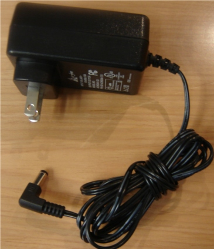
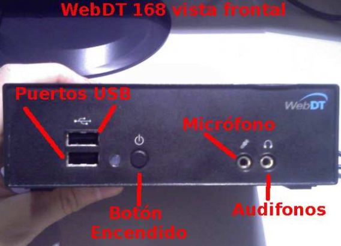
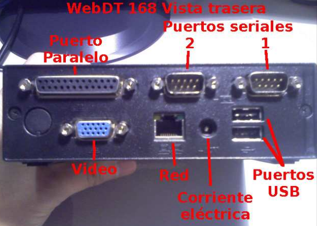

Las terminales webDT cuentan con un adaptador de corriente que es como la imagen siguiente, el cual se conecta en la parte posterior de la terminal.
En la sección frontal encontrarás entradas para conectar el tecladop y el ratón, así como el botón de encendido y entradas para audifionos y el microfono
En la parte trasera encontrarás las entradas para el cable de corriente, la entrada del monitor, la cual es azul, la entrada de red para conexion al CARE y entradas para el teclado y ratón.
